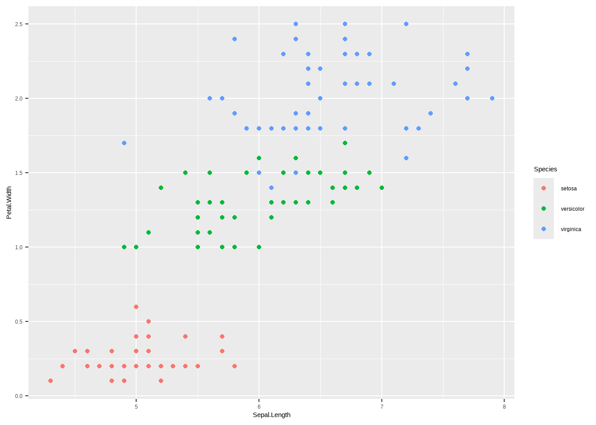
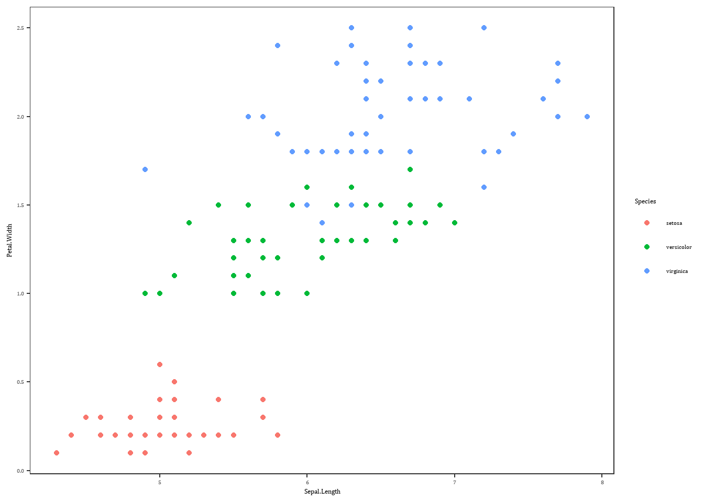
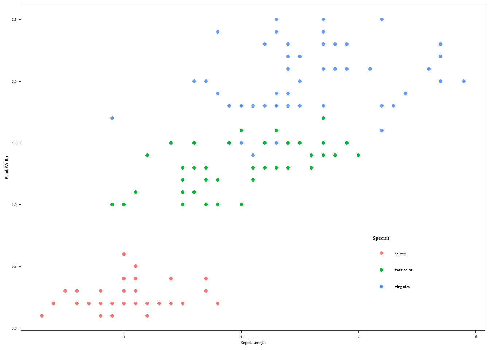
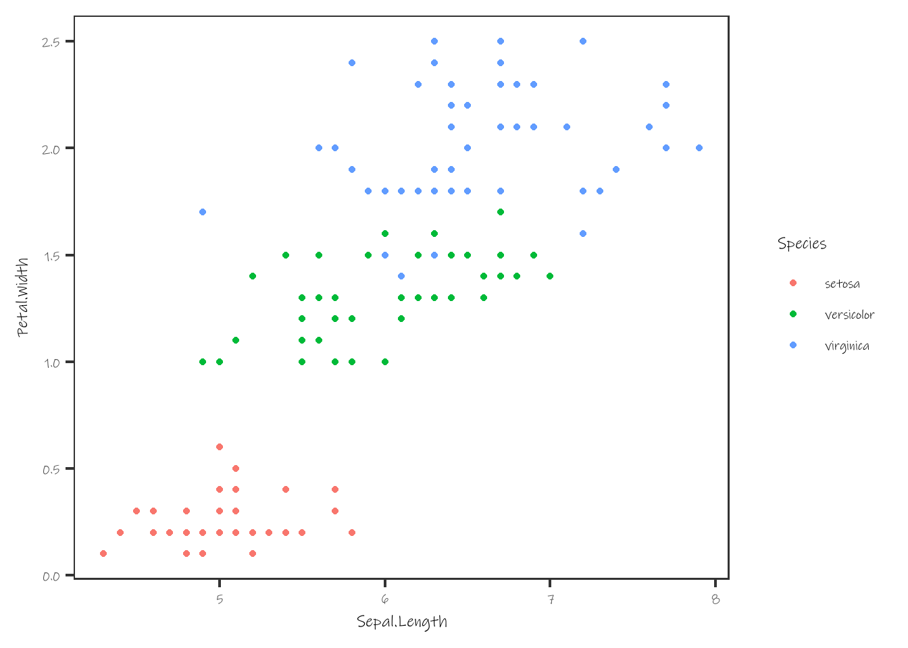
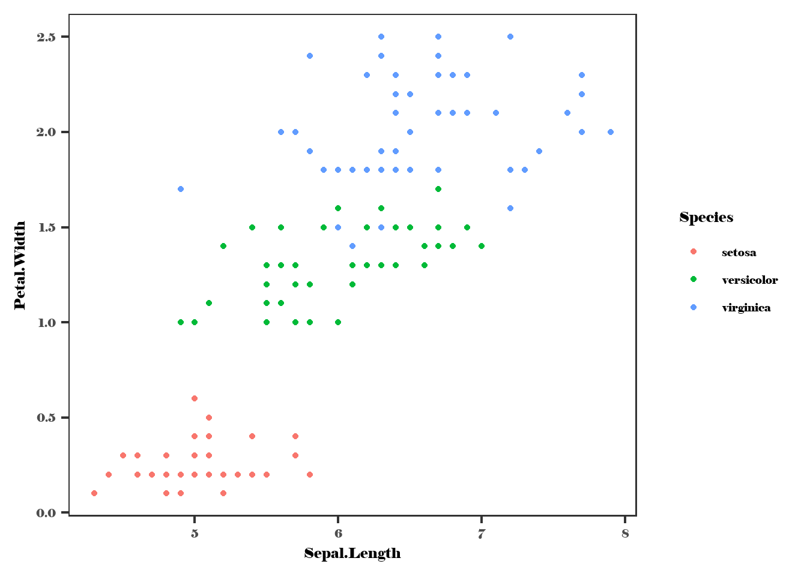

library(tidyverse) # Overkill, but easier than picking and choosingTheming and saving
Saving plots
Saving plots can be a mess, particularly for publication, where figure size and font size are required. By setting font size in the theme and figure size on save, we can ensure that the fonts are at the correct size in the final figure. Otherwise, we end up rescaling the figure and the fonts get too large or small.
There are also likely to be different format requirements (eps, pdf, png, etc).
Theming
I tend to establish a theme to set the basic plot look, including font sizes. I start with theme_bw() because the default ggplot grey background doesn’t look good in pubs. I used to set the sizes separately for each sort of text (commented out), but that is typically easier to just use the base_size argument and let ggplot handle the relative adjustments.
Can also set theme differently for presentations, including doing things like setting font to match a ppt theme.
Developing themes is now done more extensively in ggplot themes, where I develop them as more flexible functions.
Typically, very few fonts are loaded into R and available for use. See fonts.Rmd for figuring out how to work with that. The short answer is that we use showtext to load what we need (if anything). If this step is skipped, will default to the default font and throw a warning about “fontfamily not found” because we haven’t loaded the selected font yet.
We could load fonts by hand Using functions from showtext and sysfonts, and specify the text = element_text(family="Ink Free") with a manual character vector. It’s way easier to automate though, and saves issues of loading the wrong font.
First, load the function I wrote that simplifies finding the files and their names to load them. And tell R to use showtext to render fonts.
# Load local functions
devtools::load_all()ℹ Loading galenRshowtext::showtext_auto()Then, load the font(s) we want
talkfont <- 'Ink Free'
pubfont <- 'Cambria'
loadfonts(fontvec = c(talkfont, pubfont))
# loadfonts()Note that we could also just loadfonts() with no arguments to read in ALL available fonts
Pass talkfont and pubfont to the themes.
talktheme <- theme_bw(base_size = 18) +
theme(strip.background = element_blank(),
plot.background = element_blank(),
panel.grid.major = element_blank(),
panel.grid.minor = element_blank(),
text = element_text(family=talkfont)) # Replace with fontname used in PPT
#
# axis.text = element_text(size = 18),
# axis.title = element_text(size = 24),
# strip.text = element_text(size = 24),
# plot.title = element_text(size = 24))
pubtheme <- theme_bw(base_size = 10) +
theme(strip.background = element_blank(),
plot.background = element_blank(),
panel.grid.major = element_blank(),
panel.grid.minor = element_blank(),
text = element_text(family=pubfont))As an example, let’s make a simple plot with iris, and then look at the themed versions.
baseiris <- ggplot(iris, aes(x = Sepal.Length, y = Petal.Width, color = Species)) +
geom_point()
baseiris
Now, what does a publication version look like?
baseiris + pubtheme
Note that further theme changes can happen later on, e.g. Note that it’s easy to get in trouble with the internal legend positions when it comes time to save- as the dimensions change on export vs whatever arbitrary size you have the Rstudio plot pane, what looks good will changes as well.
baseiris + pubtheme +
theme(legend.title = element_text(face = 'bold'),
legend.position = c(0.8,0.2))Warning: A numeric `legend.position` argument in `theme()` was deprecated in ggplot2
3.5.0.
ℹ Please use the `legend.position.inside` argument of `theme()` instead.
For talks, we use talktheme. Terrible font, but easy to see that it’s been shifted from default.
baseiris + talktheme
We can update parts of the theme including the font while keeping the rest. Though if we haven’t loaded all fonts, will need to load the new ones now.
# load new font
loadfonts(fontvec = 'Elephant')
talktheme <- talktheme +
theme(text = element_text(family = 'Elephant')) # Replace with fontname used in PPTAnd to show that it worked, plot again.
baseiris + talktheme
Saving
There are many reasons to save plots with code rather than just copy from the plot pane, but a couple of the major ones are to control plot size (for publication, presentations, or just to make sure everything is consistent), and to automatically produce plots from models or other sorts of analyses/programs.
I tend to use the pdf(), png(), eps() etc functions directly to get more control (and because that’s what I’m used to). ggsave can do a lot of this too, but last time I used it (a while ago), it didn’t do something I wanted it to do. Maybe I’ll play with it again below and see if I like it now. I almost always end up saving pdf and png versions of plots because pdf is vector and so is superior for nearly anything produced in R, works better if you have to pull into illustrator for tweaks, and will be required for journal submissions. BUT, windows word can’t handle pdf figures (Mac word can, which is really handy). So I end up making a png version so I can see figures in documents. The answer is probably to just write everything in Rmarkdown, but I haven’t made that leap yet, or at least not completely.
For the base plotting functions, the idea is that you open a plotting ‘device’ with the first call (pdf(foo,bar)) and then send the thing we want to plot, and then shut down the device with dev.off().
In the simplest case, we can make a plot 12cm wide and 8cm tall, which is often the 1.5 column-width size for journals. I have spent quite a while trying to set the default units for plotting in pdf to metric, and though I can’t remember exactly why, it is nearly impossible. Which is frustrating. So I always set size as (desired cm)/2.54. PNG does allow setting the units, but when I print there I often set it to inches anyway so the plot commands match as much as possible between formats. Because png is a raster, we set the resolution. The default is super low, and it’s not like memory is usually an issue for these, so I usually set it to 300 or even 600 so the plot doesn’t look terrible.
For the pdf, setting useDingbats = FALSE fixes an issue where some of the basic shapes used for plotting points were represented in the dingbats font, and strange things would happen. I feel like that bug has likely gone away, but I still include it rather than get burned.
Unfortunately, using showtext to produce the font messes with the png, yielding weirdly-sized fonts.
pdf(file.path('output', 'simpleiris.pdf'),
onefile = FALSE, height = 8/2.54, width = 12/2.54, useDingbats = FALSE)
baseiris + pubtheme
dev.off()png
2 png(file.path('output', 'simpleiris.png'),
height = 8/2.54, width = 12/2.54, units = 'in', res = 600)
baseiris + pubtheme
dev.off()png
2 Turning off showtext makes the fonts the right size, but uses the default ggplot fonts instead of those accessed by showtext. There’s got to be a workaround, but maybe it doesn’t matter much- PDFs are better anyway, and we don’t often change fonts.
png(file.path('output', 'simpleirisNOFONT.png'),
height = 8/2.54, width = 12/2.54, units = 'in', res = 600)
baseiris + pubtheme
dev.off()png
2 showtext::showtext_auto(TRUE)Does ggsave get around the showtext issue? I’m not a huge fan of the way it specifies filenames and directories separately, but can probably bypass by just feeding a file path. Or that the plot is an argument- that makes it hard to do complex last-minute tweaks without cluttering up the environment. Probably 6 of one, half a dozen of the other. It does NOT seem to fix the showtext fontsize issue though.
ggsave(filename = file.path('output', 'simpleirisGG.pdf'),
plot = baseiris + pubtheme,
device = 'pdf',
width = 12, height = 8, units = 'cm')
ggsave(filename = file.path('output', 'simpleirisGG.png'),
plot = baseiris + pubtheme,
device = 'png',
width = 12, height = 8, units = 'cm',
dpi = 300)It appears (https://github.com/yixuan/showtext/issues/51) that the issue is that showtext has a dpi setting. Try that. Set the dpi in the chunk, then set showtext dpi to match, then set it back to what I think the Rmarkdown default is. Might make more sense to just set in the setup chunk at the start though- is there actually a downside to having 300 dpi throughout? See https://statr.me/2014/07/showtext-with-knitr/.
# showtext::showtext_opts(dpi = 300)
showtext::showtext_opts(dpi = knitr::opts_chunk$get()$dpi)
png(file.path('output', 'simpleiris_opts.png'),
height = 8/2.54, width = 12/2.54, units = 'in', res = 300)
baseiris + pubtheme
dev.off()png
2 # reset the resolution for the rest of the markdown
showtext::showtext_opts(dpi = 96)Sometimes, particularly for big plots, things will hang and plots won’t save or end up blank. Usually the workaround fix is to call dev.off() until the Rstudio plot pane goes blank, since it’s the first/default plotting device, and so by the time dev.off() turns its plots off, all devices are off. And then start over with what you were trying to do.
A couple things to note: If bare in a script, just need the code that makes and displays the plot in the middle. If in a function (and I think a loop?), need to wrap the thing to display in print.
If fed a list of plots, pdf will produce a multipage pdf with one plot per page.
There can be other code between opening and closing the device, which can be useful for final tweaks for printing, especially if we want to carry the base plot around to do other things to.
Saving multiple formats
One thing that I don’t like about either approach above is the difficulty of saving the same plot to multiple formats. I often need a png or similar to paste into word, but a vector to actually look good. And that requires always copy-pasting the code as above.
So, I wrote a function (in /R) that vectorises ggsave, taking all ggsave arguments but with filename_noext as a filename with no extension and a devices vector.
ggsave_multi <- function(filename_noext, plot = last_plot(), devices, ...) {
extnames <- lapply(devices, \(x) paste0(filename_noext, '.', x))
lapply(extnames, \(x) ggsave(
filename = x, plot = plot,
...
))
# similar to the ggsave return
return(invisible(unlist(extnames)))
}That allows ggsave syntax for everything but filename_noext and devices.